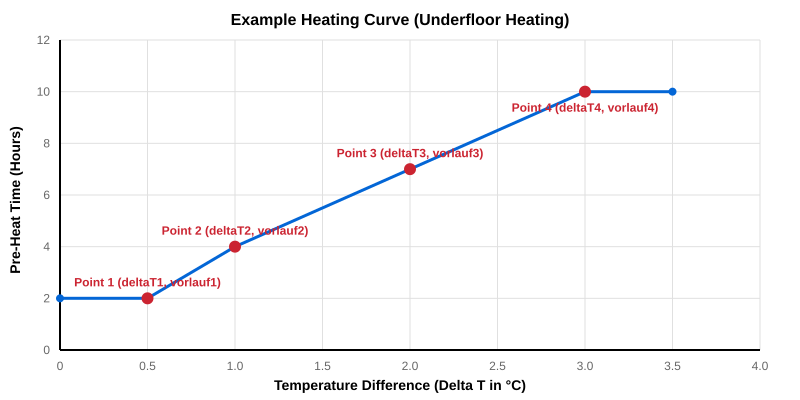

ChurchTools Heating Binding
This binding integrates the ChurchTools API to automatically control heating and HVAC systems in your building based on room bookings and calendars.
It allows you to map ChurchTools "Resources" (Rooms) to openHAB and calculates dynamic pre-heating times based on target temperatures and current temperatures.
Pre-Heating Calculation (Vorlaufzeit)
One of the core features of this binding is its intelligent pre-heating calculation. Instead of starting the heating exactly when an event begins, it calculates how long the room needs to heat up to reach the target temperature before the event starts.
It does this by calculating the temperature difference (Delta T) between the targetTemperature and the currentTemperature. You configure a heating curve using four interpolation points in the Thing configuration:
deltaT1→vorlauf1(e.g., 0.5 °C diff = 1.0 hours of heating)deltaT2→vorlauf2(e.g., 1.0 °C diff = 2.5 hours of heating)deltaT3→vorlauf3deltaT4→vorlauf4
If the current temperature difference falls between two points (e.g., 1.5 °C), the binding automatically interpolates the required time and turns on the heatingRelay / sets the hvacMode accordingly prior to the event.
⚠️ Configuration Required
Because every room has different heating systems, sizes, and insulation, there is no "one size fits all" curve. Therefore, to actually use the pre-heating feature, you MUST configure the 4 points (deltaT1-4 and vorlauf1-4) in the Thing configuration for each individual room. If you leave these fields empty, the binding defaults to 0 hours, meaning the heating will start exactly when the event begins.
Example Heating Curve (Underfloor Heating / Fußbodenheizung)
Underfloor heating systems are notoriously slow. A typical configuration for a well-insulated building might look like this:
- Punkt 1:
deltaT1 = 0.5°C →vorlauf1 = 2.0h (Only slightly cold, needs 2 hours to warm up) - Punkt 2:
deltaT2 = 1.0°C →vorlauf2 = 4.0h (1 degree cold, needs 4 hours) - Punkt 3:
deltaT3 = 2.0°C →vorlauf3 = 7.0h (2 degrees cold, needs 7 hours) - Punkt 4:
deltaT4 = 3.0°C →vorlauf4 = 10.0h (3 degrees cold, needs a massive 10 hours)

Note: You may want to configure maxEventDuration or check ChurchTools limitations if you have extremely long pre-heat times.
Manual Override (Handbetrieb)
If a user manually changes the physical KNX thermostat on the wall (or via a UI widget), the binding can detect this and temporarily suspend the automatic heating schedule.
To use this feature, you must enable enableExternalManualMode in the Thing configuration. When enabled, any deviation from the binding's expected HVAC mode will trigger the Manual Override. The automation will be paused for a configurable duration (externalManualModeDuration, default 6 hours).
Resetting the Override:
The manual override is automatically cleared when:
- The
externalManualModeDurationexpires. - A completely new heating phase (a new event in ChurchTools) starts.
- The user toggles the
heatingEnabledswitch OFF and ON again.
Event Filtering (Sicherheit & Filter)
To prevent the heating system from running unnecessarily or endlessly, the binding implements several built-in safety filters that can be configured in the Thing settings:
- Confirmed Bookings Only (
onlyConfirmedBookings): By default, the binding only looks at events in ChurchTools that have the status "Confirmed". Unconfirmed or rejected requests are completely ignored so the room stays cold. - Maximum Event Duration (
enableMaxDurationFilter/maxEventDuration): A common mistake in calendar systems is booking a room for "multiple days" instead of just a few hours. By default, any event longer than 10 hours is ignored to prevent the heating from running for days straight. You can adjust this limit or disable it entirely.
Supported Things
This binding supports the following thing types:
| Thing Type ID | Description |
|---|---|
api |
The Bridge to the ChurchTools API. |
roomHeater |
Represents a single room (Resource) that is heated automatically based on events. |
Discovery
Currently, there is no automatic discovery. You must configure the Bridge and Things manually.
Binding Configuration
The binding itself does not require any special configuration at the binding level. All configuration is done on the Bridge (api) and Things (roomHeater).
Bridge Configuration
The api bridge requires the following configuration parameters:
| Parameter | Type | Required | Default | Description |
|---|---|---|---|---|
url |
text | Yes | The base URL of your ChurchTools instance (e.g., https://mychurch.church.tools). |
|
token |
text | Yes | A login token of a user with read permissions for resources and calendars. | |
refreshInterval |
integer | No | 15 | How often (in minutes) the bookings should be fetched. |
roomResourceTypeId |
integer | No | 2 | The ID of the Resource Type for "Rooms" in ChurchTools. |
Thing Configuration
The roomHeater requires the api bridge and the following parameters:
| Parameter | Type | Required | Default | Description |
|---|---|---|---|---|
resourceId |
integer | Yes | The ID of the Resource (Room) in ChurchTools. | |
onlyConfirmedBookings |
boolean | No | true | If true, only bookings with status "Confirmed" are used for heating. |
enableMaxDurationFilter |
boolean | No | true | Prevents infinite heating if an event is accidentally booked for days. |
maxEventDuration |
integer | No | 10 | Max duration of an event (in hours) to be considered for heating. |
enablePreheating |
boolean | No | true | If disabled, heating starts exactly at event start time without pre-heat calculation. |
enableExternalManualMode |
boolean | No | false | Detects manual override on physical KNX thermostats and pauses automation. |
externalManualModeDuration |
integer | No | 6 | How long (in hours) the automation pauses on manual override. |
offHvacMode |
integer | No | 3 | KNX HVAC Mode to send when turning off (1=Comfort, 2=Standby, 3=Night, 4=Frost). |
Channels
The roomHeater thing provides the following channels:
| Channel Type ID | Item Type | Description |
|---|---|---|
currentTemperature |
Number:Temperature | The current temperature in the room (Input from e.g., KNX) |
targetTemperature |
Number:Temperature | The desired target temperature (Used for pre-heat calculation) |
heatingRelay |
Switch | The calculated state (ON/OFF) of the heating |
hvacMode |
Number | The calculated KNX HVAC mode (1=Comfort, 2=Standby, 3=Night, 4=Frost) |
nextEventStart |
DateTime | Start time of the next upcoming event |
heatingStart |
DateTime | Calculated time when the heating will switch to ON (including pre-heat) |
heatingEnabled |
Switch | Master switch to enable/disable the automation for this room |
summerMode |
Switch | Global switch to disable heating for all rooms (ignores events) |
upcomingEvent1 |
String | Name of the next upcoming event |
manualOverrideUntil |
DateTime | Shows until when the automation is paused due to manual intervention |
Full Example
churchtools.things
Bridge churchtoolsheating:api:mychurch "ChurchTools API" [ url="https://mychurch.church.tools", token="YOUR_TOKEN", refreshInterval=15 ] {
Thing roomHeater saal "Saal Heizung" [ resourceId=12, onlyConfirmedBookings=true, offHvacMode=3 ]
}churchtools.items
// Bridge/Global Items
Switch Global_summerMode "Sommerbetrieb"
// Room Items (Saal)
Number:Temperature Raum_Saal_currentTemperature "Ist-Temperatur [%.1f °C]" { channel="churchtoolsheating:roomHeater:mychurch:saal:currentTemperature", channel="knx:device:bridge:saal:currentTemp" }
Number:Temperature Raum_Saal_targetTemperature "Soll-Temperatur Vorlauf [%.1f °C]" { channel="churchtoolsheating:roomHeater:mychurch:saal:targetTemperature" }
Switch Raum_Saal_heatingRelay "Heizungsrelais (Heizphase aktiv)" { channel="churchtoolsheating:roomHeater:mychurch:saal:heatingRelay" }
Number Raum_Saal_hvacMode "HVAC Modus" { channel="churchtoolsheating:roomHeater:mychurch:saal:hvacMode", channel="knx:device:bridge:saal:hvacMode" }
Number:Temperature Raum_Saal_actuatorTargetTemp "Aktuelle Aktor-Soll-Temperatur [%.1f °C]" { channel="churchtoolsheating:roomHeater:mychurch:saal:actuatorTargetTemp" }
Switch Raum_Saal_heatingEnabled "Heizautomatik An/Aus" { channel="churchtoolsheating:roomHeater:mychurch:saal:heatingEnabled" }
Switch Raum_Saal_summerMode "Sommerbetrieb Saal" { channel="churchtoolsheating:roomHeater:mychurch:saal:summerMode" }
DateTime Raum_Saal_manualOverrideUntil "Handbetrieb Pause bis [%1$tH:%1$tM]" { channel="churchtoolsheating:roomHeater:mychurch:saal:manualOverrideUntil" }
DateTime Raum_Saal_nextEventStart "Nächster Termin Start [%1$td.%1$tm. %1$tH:%1$tM]" { channel="churchtoolsheating:roomHeater:mychurch:saal:nextEventStart" }
DateTime Raum_Saal_nextEventEnd "Nächster Termin Ende [%1$td.%1$tm. %1$tH:%1$tM]" { channel="churchtoolsheating:roomHeater:mychurch:saal:nextEventEnd" }
DateTime Raum_Saal_heatingStart "Geplanter Heizbeginn [%1$td.%1$tm. %1$tH:%1$tM]" { channel="churchtoolsheating:roomHeater:mychurch:saal:heatingStart" }
DateTime Raum_Saal_actualHeatingStart "Tatsächlicher Heizbeginn [%1$tH:%1$tM]" { channel="churchtoolsheating:roomHeater:mychurch:saal:actualHeatingStart" }
String Raum_Saal_upcomingEvent1 "Nächster Termin: [%s]" { channel="churchtoolsheating:roomHeater:mychurch:saal:upcomingEvent1" }churchtools.sitemap
sitemap churchtools label="ChurchTools Heizung" {
Frame label="Globale Einstellungen" {
Switch item=Global_summerMode icon="sun"
}
Frame label="Saal Heizung" {
Text item=Raum_Saal_upcomingEvent1
Text item=Raum_Saal_nextEventStart icon="calendar"
Text item=Raum_Saal_nextEventEnd icon="calendar"
Text item=Raum_Saal_heatingStart icon="time"
Text item=Raum_Saal_actualHeatingStart icon="time" visibility=[Raum_Saal_actualHeatingStart!="UNDEF"]
Text item=Raum_Saal_currentTemperature icon="temperature"
Setpoint item=Raum_Saal_targetTemperature icon="heating" minValue=15 maxValue=28 step=0.5
Text item=Raum_Saal_actuatorTargetTemp icon="temperature"
Text item=Raum_Saal_heatingRelay icon="fire"
Selection item=Raum_Saal_hvacMode mappings=[1="Komfort", 2="Standby", 3="Nacht", 4="Frost"]
Switch item=Raum_Saal_heatingEnabled icon="switch"
Text item=Raum_Saal_manualOverrideUntil icon="time" visibility=[Raum_Saal_manualOverrideUntil!="UNDEF"] valuecolor=["red"]
Switch item=Raum_Saal_summerMode icon="sun"
}
}Note on KNX Setpoints
For a robust setup with smart KNX thermostats, it is highly recommended to link the targetTemperature channel ONLY to a virtual openHAB item. The binding uses this virtual item solely to calculate the pre-heat duration. The actual KNX actuator should be controlled exclusively via the hvacMode channel, relying on the actuator's internal base setpoint. Changing KNX setpoints dynamically via OpenHAB often causes the thermostat to immediately jump to Comfort mode, breaking the automation cycle.